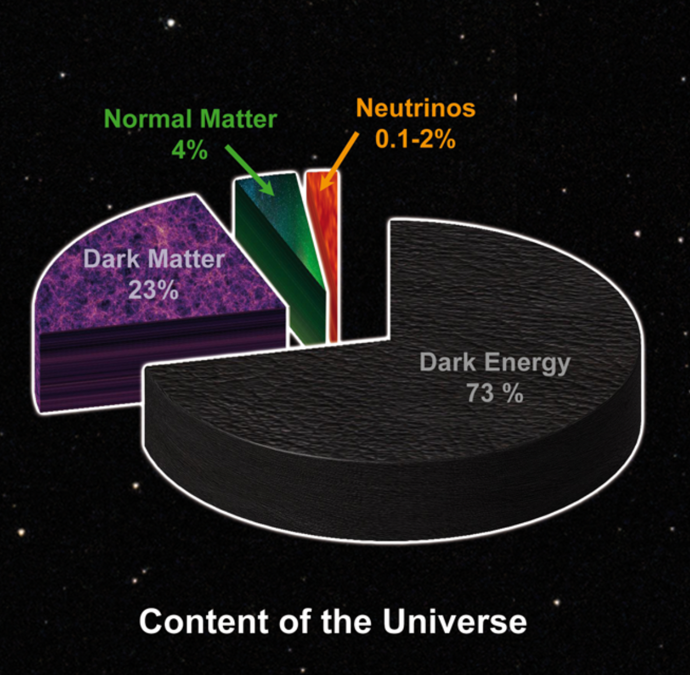
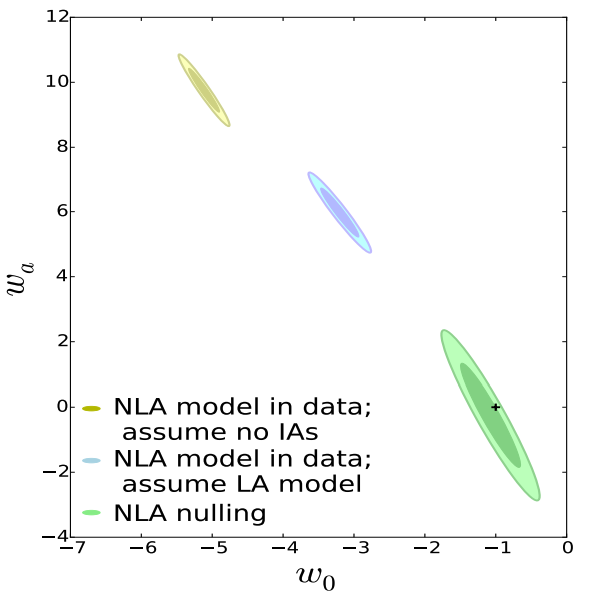
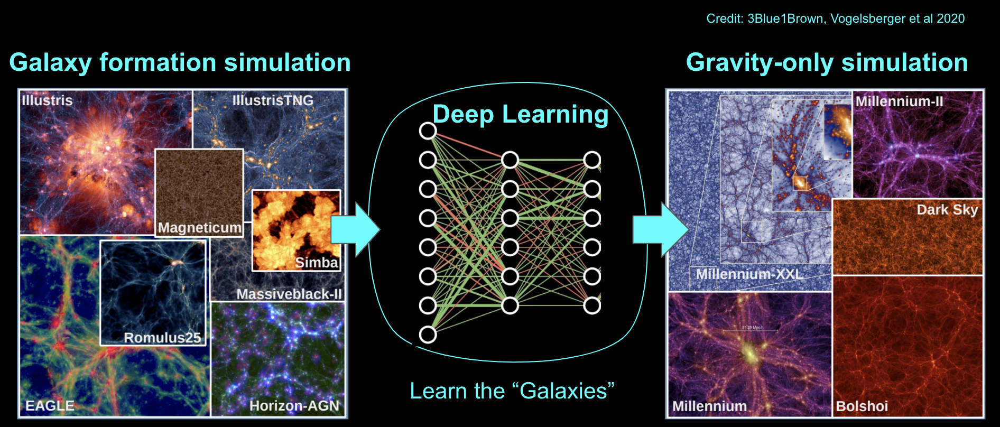
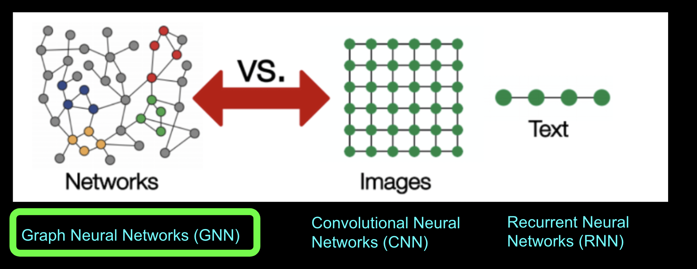
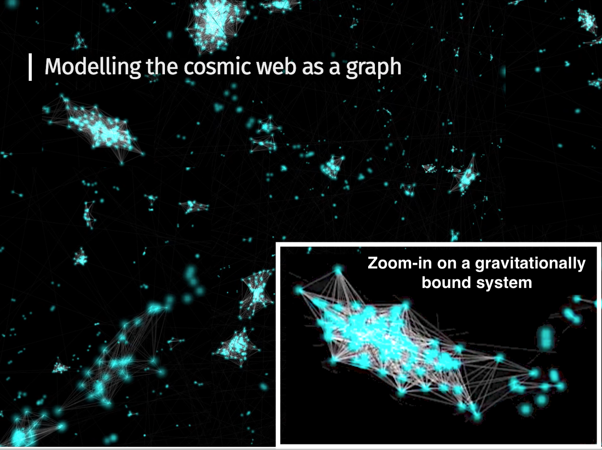

Galaxies on Graph Neural Networks:
towards robust synthetic galaxy catalogs with deep generative models
Yesukhei Jagvaral
Carnegie Mellon University
+ Francois Lanusse,
Sukhdeep Singh, Rachel Mandelbaum,
Siamak Ravanbakhsh, Duncan Campbell
Introduction
Modeling Galaxy Orientations using Graph Neural Networks

- Inputs are galaxy catalogs from a cosmological simulation
- Groups of Galaxies are modeled as sets of Graphs
- Deep Generative Model for Galaxy Orientations based on GANs
- Also works on other features, not just orientation/alignment
- First generative model for correlated properties over populations of galaxies
Introduction
Why Galaxy Alignments are Important


Image credit: Kirk et al, 2015
- Assuming no intrinsic alignment will bias the measurement of cosmological parameters
- Also different models have different impacts
- For Precision Cosmology, this effect needs to be properly accounted for
- Analytic/parametric models in the Literature
Overview/Motivation
Generating Mock Catalogs with Deep Learning

Galaxies on Graph Neural Networks
Science goal: Generative Modeling of Galaxy Orientations with Graph Neural Networks
- What type of Neural Network do we need?

- CNNs are appropriate for grid-like data
- RNN are appropriate for time-series data
- Graphs are appropriate for sparsely distributed objects
- Also, Graphs are appropriate for capturing correlations among objects
We tested our idea using the
IllustrisTNG cosmological simulation
The Cosmic Web as a Set of Graphs

TNG100 modeled as set of Graphs
Galaxies on Graph Neural Networks
The Graph Convolution of the Neural Network
- $$ \quad y_i = b + \underbrace{\color{orange}{\mathbf{W}_0} h_{i}}_{\tiny \mbox{self-connection}} +
\underbrace{\sum\limits_{m = 1}^M \sum\limits_{j \in \mathcal{N}_i} \overbrace{\textcolor{teal}{q_{m}(\mathbf{x}_i, \mathbf{x}_j)} }^{\tiny \mbox{directional-distance}}
\ w_{i,j} \ \mathbf{W}_m h_j}_{\tiny \mbox{average over neighbors}}$$

Galaxies on Graph Neural Networks
Science goal: Generative Modeling of Galaxy Orientations with Graph Neural Networks
- The Architecture of the Neural Network for 2D vector correlations

- Red dashed box: within halo
- Purple dashed box: outside halo
- Desired correlated 2D ellipticity
(modeled as a vector without the 180 degree symmetry)
Galaxies on Graph Neural Networks
Science goal: Generative Modeling of Galaxy Orientations with Graph Neural Networks
- Results for the 2D position-shape correlations:
.png)
- Good quantitative agreement
- Good qualitative trends with mass and morphological type
Summary
- Deep Generative Model For Galaxy Orientation
- Methods: Modeled the Cosmic Web as a set of Graphs
- Methods: Graph Convolutional NNs and GANs
- Results: The model can learn and generate 3D, 2D vectors and scalars
- Results: Generated quantities are in good agreement with the simulation
Thank you!
Please take a look at the full paper: https://arxiv.org/abs/2204.07077